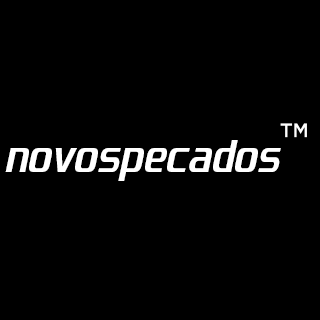

loja online em breve
À NOVA GERAÇÃO
Estar apaixonado pela arte é como estar embriagado. Você sente náuseas durante o dia. A dose errada de arte no momento errado impede você de agir como uma pessoa comum na sociedade deveria agir. A abstinência é forte durante o trabalho, a escola e momentos pacatos.
Certamente, sentir-se vivo é o efeito da arte de que mais sentimos saudades. É como estar na beira da inovação do mundo. Quando se está criando, é como se a mente do artista estivesse em um lugar em que também estão presentes todos os seres que um dia foram iluminados pela dádiva da criação: Tesla, Jobs, Virgil, Wong Kar-Wai, Ye e muitos outros.
Viver cada momento ao extremo, deixar de lado questões morais e éticas em prol da sua intuição, estar à beira de um colapso a todo momento e enxergar valor artístico em todas as situações da vida, no mundo em que vivemos, todos esses são sintomas de que você foi escolhido para criar.
É impossível se adequar à sociedade vivendo dessa forma. Então, que vivamos à nossa maneira e que façamos disso as letras das novas músicas, os roteiros dos novos filmes, o enredo dos novos livros e as estampas das novas roupas. Como uma geração perdida, em meio à tecnologia e a um mundo cada vez mais egoísta, que nos unamos e abracemos com orgulho os novos pecados que vivemos a cada dia.